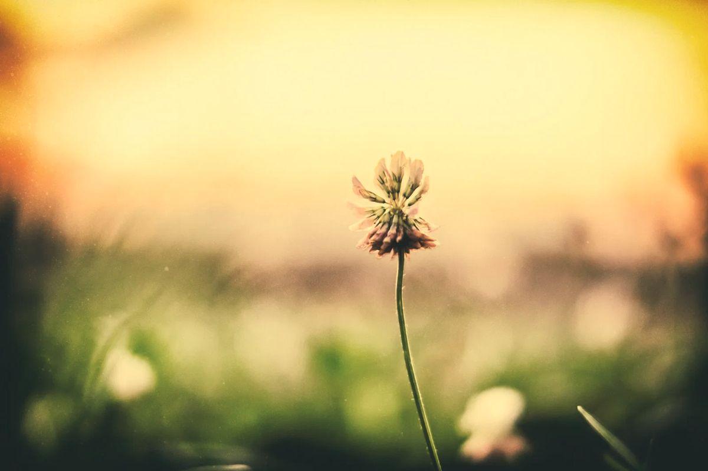

Разнотравьем мы называем мёд, который пчёлы собирают сразу с многих растений: с трав на лугах и в поле, с древесных и лесных цветов. Это мёд лета, который никогда не бывает одинаковым.
Это полифлорный мёд: в нём есть нектар нескольких или даже многих растений сразу. Пчёлы посещают клевер, донник, чабрец, чертополох, полевые и лесные цветы, а что именно попадёт в мёд, зависит от того, что цветёт рядом. Поэтому у разнотравья нет единого «рецепта»: каждая партия неповторима.
Разнотравный мёд мы откачиваем после акации, летом. К этому времени отцветает акация, а до подсолнуха ещё далеко, поэтому пчёлы работают на разных лугах и в поле. Иногда разнотравье становится главным мёдом сезона. Подробнее о том, почему медосбор каждый год разный, в почему мёд каждый год разный.
Мёд такой, каким был сезон. В тёплый влажный год цветёт одно, в засушливый другое. Разнотравье отражает это лучше других сортов. Именно поэтому мы не называем разнотравный мёд «стандартным»: его вкус и цвет — это подпись сезона.
Разнотравный мёд, как и все остальные, состоит из фруктозы, глюкозы и воды, а также из ферментов, органических кислот, аминокислот, минералов и антиоксидантов. Перечень компонентов есть на странице «Польза мёда».
В чае (когда напиток остыл ниже 50 °C), к кашам, сыру, йогурту, выпечке, как универсальный мёд для повседневного употребления. Ещё несколько идей: «Мёд в чае и на кухне».
В плотно закрытой банке, в сухом прохладном и тёмном месте. Через некоторое время мёд густеет, и это нормально: подробно «Как хранить мёд».
Разнотравный мёд — это смесь разных мёдов?
Нет. Это мёд, который пчёлы сами собрали с разных растений. Мы ничего не смешиваем.
Почему цвет разнотравного мёда бывает разный?
Потому что в нём разное количество нектара разных растений: от светлых трав до более тёмных.
Чем разнотравье отличается от акациевого мёда?
акациевый мёд собран с одного растения, он светлый и долго жидкий. Разнотравье имеет более сложный букет и каждый год другой вкус. Сравнение сортов: «Сравнение сортов».